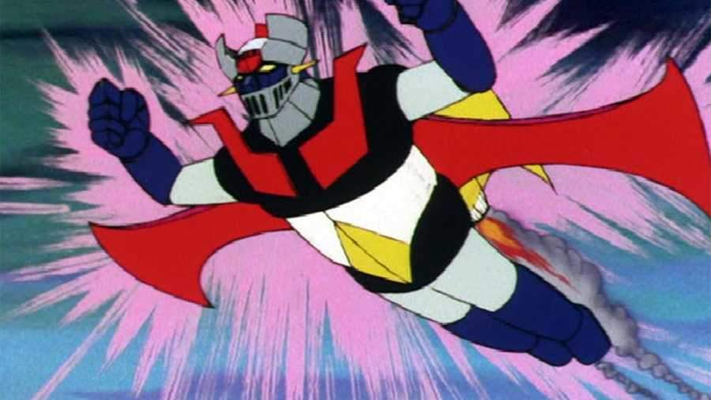

Serie Favorita
Mazinger Z

Nombre Mazinger Z
Categoria Mecha
Resumen La historia de la serie trata sobre un grupo de científicos que disponen de un robot gigante en su lucha
contra las fuerzas malignas del Dr. Hell (también conocido como Dr. Infierno en algunos países de habla hispana).
El manga fue publicado por primera vez el 2 de octubre de 1972 en el semanario Shōnen Jump.
Autor: Gō Nagai
Personajes:
Personajes Antagonistas :